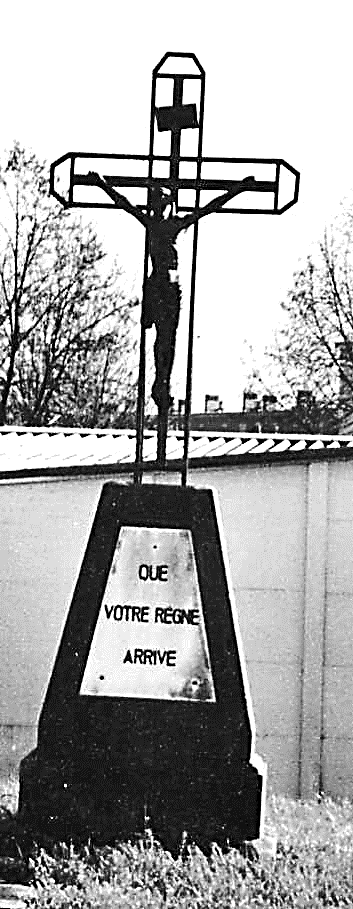
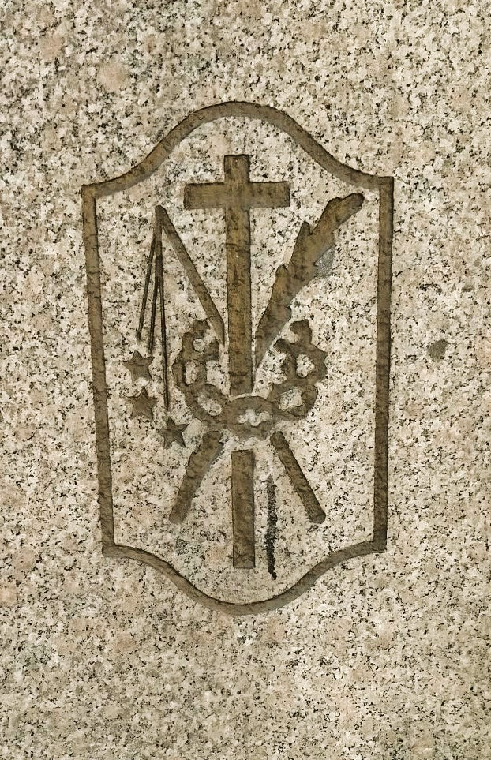

Calvaires et Croix des champs
*Depuis la nuit des temps, des monuments ont été érigés à la Gloire des Dieux ou pour obtenir leurs faveurs, aussi pour commémorer le souvenir d’événements ou de personnes et ce depuis les mégalithes du néolithique, jusqu’à nos modestes croix des champs en passant par les grandioses calvaires bretons du Moyen-Âge. *
Au début de notre ère, les monuments païens ont été « christianisés », souvent par apposition d’une croix.Nous allons examiner la naissance, la vie et parfois leur disparition.
Les croix et calvaires de notre région, pratiquement toujours en grès, ont changé de style au cours des âges.
D’abord simples colonnes cylindriques avec une croix en bas-relief, au 18ème siècle, croix hautes et étroites sur un socle bas avec le crucifié en demi-relief.
Au 19ème siècle, socle large et haut avec des sculptures et surmonté d’une table, corps très renflé facilitant les inscriptions, croix avec le Christ en haut-relief.
Les calvaires comportaient toujours des statues et des inscriptions de prières ou ex-voto, instruments de la crucifixion ou autres figures stylisées…
Les croix et Christ en fonte ou en bronze sont plus récents.
Combien y en avait-il à Rouhling ?
Combien ont été victimes des guerres, révolutions, accidents, vandales, de l’usure du temps et de l’indifférence ?
Nous allons essayer de pénétrer une partie de ces mystères en suivant la numérotation de la carte, en commençant par les sept Croix et Calvaires des rues de Grosbliederstroff, Lixing-lès-Rouhling et Sarreguemines, situées entre le Nord et l’Est.
Puis nous continuerons avec les neuf autres se situant entre le Sud et l’Ouest du village, rue de l’Eglise et vers Cadenbronn.
Croix I
Naguère loin du village, route de Grosbliederstroff, aujourd’hui à l’entrée de la « Cité », autrefois à la merci des attelages agricoles et des automobiles, aujourd’hui bien « protégée » derrière une armoire-relais et un poteau du réseau électrique. Cette croix a une longue histoire mouvementée…
Elle avait été érigée vers 1755 par Etienne WILLAR et son épouse Ursule MASSING, couple marié en 1742 et parents de huit enfants.
Vers 1830, elle était écroulée et fut restaurée par Jean WARY, célibataire, né en 1773, maître-tailleur et trésorier du Conseil de Fabrique, petit-fils d’Etienne WILLAR. Elle fut bénie le 16 juillet 1837 par l’abbé Augustin BARTH.
Vers 1912, elle fut renversée par une charrette de foin de Pierre SCHMITT, qui l’a fait restaurer en y faisant mettre un Christ en fonte.
Ci-contre la charmante photo de 1938, qui représente le calvaire d’origine.
Elle survécut aussi aux deux guerres du siècle. Mais peu de temps après, elle fut à nouveau renversée par une charrette conduite par Joseph TONI, le 29 mai 1946.
Son oncle Othon SPOHR la fit reconstruire dans sa forme actuelle, avec une croix en fer portant le Christ en fonte de 1912.
Elle porte sur une plaque de marbre blanc avec l’inscription : « Que votre règne arrive ». Longue vie à cette troisième croix !
En 2022, la municipalité, a apporté un coup de jeune à ce calvaire.
Croix II
Avant sa disparition, entourée d’une grille en fer forgé, elle était située en haut du talus, à l’intersection des routes de Sarreguemines et de Grosbliederstroff. Aux dires des anciens qui l’ont connu, c’était le plus beau calvaire de Rouhling.
Entre 1956 et 1960, en raison de l’augmentation de la circulation automobile, de la création de la cité et de l’implantation des écoles, le carrefour a été agrandi et ce majestueux calvaire d’environ 3 mètres de hauteur en a fait les frais.
Une entreprise fut chargée de déblayer le terrain et en un tour de main, le calvaire était sur la décharge à gravats. Laxisme ou complicité tacite de la municipalité, réaction tardive d’un propriétaire… ?
On avait beaucoup d’autres soucis à cette époque !
Cette photo de 1956, n’est pas de très bonne qualité, car elle a été extraite d’une vue d’ensemble, déjà de qualité moyenne. Mais nous pouvons quand même apercevoir la grande dimension et la beauté de ce monument.
Croix III
Route de Lixing-lès-Rouhling, une croix assez volumineuse, la partie supérieure s’était écroulée depuis de nombreuses années si bien qu’elle avait disparu dans un buisson épineux quand la commune acquit le terrain constructible en 2002.
La partie basse, très lourde, est toujours restée debout, comporte trois tableaux. Après dégagement, les inscriptions suivantes devinrent lisibles :
-Le Tableau central est le plus grand.
« Dies Kreuz ist errichtet worden zur Ehre Gottes durch Jacob KLAM und durch FERSING Anna – 1882** » **
Jacob (1811-1889) et Anna (1810-1882) se sont mariés en 1835. Il est à supposer que cette croix fut érigée en souvenir d’Anna après son décès le 26/10/1882.
-
Le Tableau de gauche comporte une supplique, difficilement lisible.
-
Le Tableau de droite, de même : « Von allen Uebel, erlöse uns O Herr ! » (De tout mal, délivre nous Seigneur.)
Croix IV
Cette croix assez petite et étroite était écroulée et a disparu dans les années 1990, lors des constructions à cet emplacement, proche de l’orée de la forêt de Lixing-lès-Rouhling.
Elle avait été érigée par Madeleine NIEDERLAENDER et bénie le 16 juillet 1837 par l’abbé BARTH, qui la situait « au sortir du village », alors qu’il n’y avait qu’une seule maison à l’entrée de cette rue. Il est à présumer qu’il s’agit de Madeleine NIEDERLAENDER, née en 1773, qui l’aurait fait érigée avant son mariage avec Nicolas HENTZ en 1798.
Croix V
Située au bord de la route de Sarreguemines, approximativement à l’emplacement de la maison n°34 actuelle, où aboutissait un sentier reliant la rue des Jardins à la route vers Sarreguemines. C’était une croix simple, placée entre deux arbres. Très abîmée pendant la guerre, brisée lors de sa chute, elle a été enlevée dans les années 1950. Elle avait été érigée vers 1830 par les époux Jean EBERHART et Marguerite SCHMITT, mariés en 1806. Elle fut bénie le 2 mai 1837 par l’abbé Augustin BARTH.
Croix VI
Placée au bord de la route de Sarreguemines entre le lotissement « Bellevue » et la zone artisanale, elle avait appartenu au chanoine Nicolas EBERHART. Elle fut érigée par la famille MASSING en 1898, entourée d’une grille en fer forgé.
Elle comporte de nombreuses inscriptions sur 2 plaques de marbre blanc :
- En haut, sous le crucifix : « Tout est consommé », dernières paroles du Christ sur la croix.

Ensuite, 3 prières indulgenciées :
« Mon Jésus, miséricorde » - 100 jours d’indulgence
« Doux cœur de Jésus, soyez mon amour » - 300 jours d’indulgence
« Doux cœur de Marie, soyez mon salut » - 300 jours d’indulgence
Ces inscriptions sont beaucoup plus récentes que son érection de 1898.
Le calvaire fut entièrement restauré et de nos jours ce n’est pas négligeable, d’entreprendre une telle initiative pour la sauvegarde d’un monument du patrimoine public ou privé.
Le mérite revient à Roger EBERHART, ancien habitant de Rouhling, résidant à Grundviller, à qui il tenait à cœur, de ne pas voire continuellement le délabrement de la stèle familiale.
L’entreprise de restauration procéda au démontage, puis au nettoyage des parties résiduelles du socle et de la section basse.
Quant à la partie haute, il a fallu la recréer complètement, l’ancienne ayant été démolie au fil du temps. Il ne faut pas oublier que le calvaire érigé en 1898 a subi les affres de la guerre dans une zone bombardée par l’armée Américaine en 1944. L’ancien crucifix ayant disparu sans autre raison explicative, un nouveau en bronze fut installé.

Le résultat final fut éloquent, tant la réhabilitation du calvaire en grès des Vosges, lui donne un bel effet.
Afin sécuriser le site, le fils Jean-Claude et le neveu Jean-Luc, se sont attelés à confectionner une grille en fer galvanisée encadrant le monument, tout en aménageant le pied de la croix de jolies pierres blanches. La famille EBERHART a mis un point d’honneur en procédant à une « inauguration » symbolique le 09/06/2014, lundi de Pentecôte.
Puis, le monument restauré fut cédé à la Municipalité, qui dorénavant aura la charge de le remettre en état, si le besoin devait s’en faire sentir.
Croix VII
Ce très beau calvaire au bord de la route à 100m de l’entrée à la zone artisanale, route de Sarreguemines, s’est trouvé trop en contrebas après réfection de la route. Il était très abîmé, en partie à la suite d’un acte de vandalisme.
Les propriétaires, la famille LORSUNG, avaient récupéré les deux statues. Lorsque la commune acquit le terrain, le monument fut remis à neuf et transféré à côté de l’église.
Qui a fait ériger ce remarquable calvaire monumental ?
L’inscription nous renseigne : (en respectant l’orthographe)
Dieses Kreutz hat lasen aufrichten
** Nicolas Willar und seine Ehefrau**
Margaretha Parrang – 1853
A remarquer que la date est inexacte : il a été érigé en 1833, erreur du sculpteur suite à une mauvaise lisibilité. Nicolas WILLAR était né en 1765, maire de Rouhling de 1816 à 1835, marié en 1790 avec Marguerite PARRANG de Rémelfing. Il est décédé en 1848. C’était un homme polyvalent, énergique voire hargneux. Il s’est fait remarquer pour sa grande détermination, lors des travaux d’agrandissement de l’église en 1833/34.
Inscriptions, outre celle ci-dessus : (en respectant l’orthographe)
-
Les noms de Sainte Marie et de Saint Jean auprès des deux statues, une réalité évangélique.
-
Une louange : Christus überwindet - Christus regirt - Christus der Herr, triumphiert
Traduction approximative des mots latinvincit, regnat imperat : louange chantée à la Fête-Dieu.
- Une indulgence :
« 40 Tage Ablas für den der hier 5 Vater Unser und 5 AWE Maria reumütig auf den Knie bethet für das Heil der Kirche dieser Pfarr und des Bisthums »
Traduction : 40 jours d’indulgence pour celui qui récite ici, avec repentir et à genoux, 5 Notre Père et 5 Ave Maria, pour le Salut de l’église de cette paroisse et de l’évêché.
On peut se demander si Nicolas WILLAR a créé cette « indulgence » de son propre chef, initiative pour laquelle il n’avait aucune habilitation.
Quoi qu’il en soit, ce calvaire a été béni le 02 mai 1837, quatre ans après son érection, en vertu d’une « commission » de l’évêché à l’abbé BARTH.
L’érection de ce calvaire est de toute évidence à mettre en relation avec les travaux de l’église, même si nous ne connaîtrons jamais ses motivations profondes.
On peut se hasarder à une supposition. En projetant l’agrandissement de l’église en 1831-1833, il s’est heurté à une vive opposition du curé, l’abbé OHLIG ainsi que de l’évêché. Tout en ayant le Conseil Municipal et toute la population avec lui, il a voulu « s’assurer doublement les grâces du ciel », par son sacrifice pécuniaire et en incitant les fidèles à prier pour la réussite de son projet et pour ses « adversaires ». Supposition sans doute proche de la vérité, même si elle nous paraît invraisemblable de nos jours.
Croix VIII
Située derrière l’église, cette croix a été légèrement déplacée et remise à neuf lors des travaux d’aménagement du carrefour rue de l’Eglise et rue des Champs. Elle est ainsi tombée dans le domaine public. Elle porte comme seule inscription la date de 1870. Elle semble avoir été érigée par Anne SCHMITT après le décès de son époux Nicolas FERSING en 1869.
Le socle puissant, surmonté d’une tablette, tranche avec la finesse de la partie supérieure comportant une belle niche avec la sainte vierge et une croix tréflée avec un Christ en fonte.
Croix IX
La croix se trouvait rue des Champs. Elle a disparu, en ne laissant ni archives, ni souvenirs précis. A la fin de l’année 1939, un petit cimetière militaire fut créé près de cette croix, derrière le presbytère de l’époque. Neuf tombes ci-trouvaient : six soldats Français qui appartenaient au 117ème Régiment d’Infanterie, ainsi qu’un soldat, un adjudant et un lieutenant Allemand, tous morts au combat le 26 décembre 1939, à Rouhling ou aux alentours.
Croix X
Elle se trouvait près de la ferme (Erboff) de Achille TONI et a été démontée par M. Jean-Louis JUNG, qui l’a implantée derrière sa maison au lieu-dit « Hasegarten ».
Elle avait été érigée vers 1920 à la mémoire de son grand-père, mort en Russie en 1915. Elle comporte les inscriptions suivantes :
« Erigée en l’honneur de DIEU et à la mémoire de Jean Pierre JUNG, mort en Russie au champ de bataille le 20 septembre 1915. Veuve JUNG et ses enfants ».« Mon Jésus, miséricorde ».
Marie TONI, veuve de Jean Pierre JUNG, épousa en 2ème noce, Joseph LORSUNG (Maire de 1945 à 1947).
Précisions : On peut l’observer en empruntant un petit chemin se situant entre les deux maisons qui précédent celle de M. et Mme JUNG Jean-Louis. Au bout d’une cinquantaine de mètres, vous trouverez un portail en bois, que vous pouvez ouvrir. Le calvaire se situe à droite dans un petit verger.
Croix XI
Elle se trouvait précédemment au bord de la route de Cadenbronn sur le terrain de la maison de Frank WEBER, qui l’a fait déplacer vers l’arrière de son terrain afin de la mettre en valeur.
Les inscriptions sont difficilement lisibles, surtout la date dont le 3ème chiffre est effacé (1800 ou 1810). Elle est assez étroite et bien dans le style du début du 19ème siècle.
Elle avait été érigée par le couple Jacques WILLAR (1768-1838) et sa 2ème épouse, Eve WEILAND (1774-1851) qui s’était mariée en 1802 après que Jacques eut perdu sa 1ère épouse, Marguerite FISTIE en 1800.
Croix XII
*Cette croix est située sur le côté de la route de Cadenbronn, à environ 100 mètres de la forêt, en face de l’aire de repos. Lors de la réfection de la route, elle a été déplacée et réparée. *
Elle fut érigée vers 1930, par Nicolas JUNG, cabaretier (Wirtschaft JUNG).
Le calvaire est en granit rose avec une plaque de marbre blanc portant l’inscription : « A fulgura et tempestate, libera nos Domine »
Une invocation tirée de la Litanie des Saints : « De la foudre et de la tempête, délivre-nous Seigneur »
Elle est entourée d’une grille en fer forgé et la croix ne comporte pas de Christ.
Croix XIII
Elle était située sur le chemin de Hundling, à droite, peu avant le chemin d’accès au hangar agricole. Très abîmée, elle a disparu dans les années 1950.
Elle avait été érigée par le couple Henry WILLAR (1784-1863) et Eva NICKLES, originaire d’Auersmacher en Sarre. Erigée vers 1830, elle fut bénie par l’abbé BARTH le 10 septembre 1837.
Croix XIV
Cette croix se trouvait également sur le chemin de Hundling (Guerenaweg). Elle fut érigée en 1945 ou 1946. Les inscriptions :
- en haut « In Cruce Salus » (Le Salut est dans la Croix).
- ensuite « Merci au Tout-Puissant pour la protection miraculeuse pendant le terrible bombardement du 13 juillet 1944 au cours duquel Marcel FERSING fut grièvement blessé » Famille FERSING-PHILIPPE
- en bas : « In Te Domine sperami non confundar in aeternum »
(Je veux espérer en toi, Seigneur, je ne serai pas confondu à jamais).
Ce bombardement est relaté dans le livre « Compléments d’Histoire » de Raymond LEHMANN, au chapitre « Indemnités pour comblement d’excavations ».
D’aucuns critiquent ce texte en disant : « Pourquoi dire merci pour avoir été grièvement blessé » ?
Il faut savoir que Marcel FERSING, alors âgé de 33 ans était déjà père de 4 enfants en bas âge, avait reçu un éclat d’obus à la tête et avait séjourné à l’hôpital de Strasbourg pendant plus de 6 mois, jusqu’après la Libération. Il fut déclaré invalide.
Le « miracle » est qu’il n’a pas été tué sur le coup ! Tel est le sens du « merci ».

La croix a été bénie par l’abbé FRIEDERICH le 30 mai 1946, lors de la procession du dernier jour des Rogations.
Ce calvaire a été vandalisé dans les années 2010 et réparé maladroitement. En 2020, il a été renversé par l’agriculteur qui labourait le champ. La famille FERSING-TRETJAK en a été informé et l’assurance de l’agriculteur a pris en charge la rénovation qui a été réalisée, comme on peut le voir, par des spécialistes.
Croix XV
L’abbé BARTH qui a béni cette croix le 10 septembre 1837, l’a située « sur le chemin d’Ippling ». Elle se trouvait au lieu-dit « Espen ».
Ce chemin ayant été en partie « absorbé » par les champs voisins, elle était mal placée. C’est alors qu’Adolphe WEBER l’a fait déplacer à côté de ses vignes.
De style du 19ème siècle, la croix est assez trapue. Elle porte une inscription simple, qui était à ce moment-là, en partie cachée par un buisson de roses :
« Errichtet zur Ehre Gottes durch André JUNG und Anna Maria FERSING » - 1830
André né en 1772, épousa le 1er mai 1798, Anna Maria, née en 1778. Lui, était l’arrière-grand-père paternel de Marie JUNG (1897-1980) épouse de Joseph SPOHR (1894-1976).
(Les vignes n’existant plus et la surface de culture s’étant étendue, M. WEBER fit installer en 2020, le calvaire dans l’espace vert derrière sa maison)
Croix XVI
Située au croisement de la rue de la Montagne et de l’Avenue de la Paix dans le jardin de la Famille Armand SCHWARTZ. Elle a été érigée par le couple Joseph SCHWARTZ et Anne EBERHART, mariés en 1927. Le seul ornement liturgique sur le monument est « JHS ». (Monogramme de Jésus)
A noter que quatre de ces seize croix des champs ont été érigées par des WILLAR : Jacques, Henri et Nicolas étaient frères, seul Etienne n’était pas un proche parent.
L’érection de ces calvaires et croix des champs, essentiellement au cours du 19ème siècle, souvent avec d’importants sacrifices, était toujours un acte de foi, difficile à comprendre aujourd’hui pour quelques esprits cartésiens.
*Des traditions légendaires nous racontent que certains « rebouteux » (guérisseurs) ont reçu ou hérité le « don » de traiter les entorses, luxation, de réduire les fractures, … parce qu’ils avaient, ou un de leur aïeul, réparé ou relevé une croix en ruine. *
A l’inverse, les légendes content aussi, des punitions proches de la peine du talion (châtiment) pour les profanateurs.
*Depuis plus d’un demi-siècle, une seule croix s’est ajoutée. *
Elle est en bois, anonyme, sans dédicace, donc difficile à classer dans notre patrimoine classique.
*Loin du village, elle se situe à l’entrée de la nouvelle forêt de Rouhling, près du golf. *
Elle a été implantée par Gilbert ROHR le 10 avril 1998.
Mais aujourd’hui, nous pouvons rajouter une 17ème stèle !
Elle a été découverte par les bénévoles à la « Maison des Arts et des Traditions » en mai 2011, lors des travaux de creusement, pour l’enfouissement d’une cuve de récupération d'eau de pluie à l'arrière de la maison.
La grille qui l’accompagne, a été trouvée en 2002, pendant le nettoyage de l’arrière de la maison. Elle devait probablement entourer le calvaire.
(La stèle est visible lors des visites de la maison lorraine)
Il n’existe aucune précision sur le lieu de l’érection de ce monument, mais nous pouvons nous imaginer que le calvaire se situait à l’arrière de la maison et que sa stèle a sans doute été jetée au rebut en 1940, lors des travaux de déblayage derrière la maison.
Cependant, nous pouvons affirmer qu’elle a été érigée en mémoire de Pierre JUNG, né le 22/02/1770, décédé le 18/01/1842 et de son épouse Anne MASSING, née le 09/07/1773, décédée le 10/02/1854. Ils se sont mariés le 07/01/1794 à Rouhling.
C’étaient les Tris-aïeux de Joseph JUNG, dit Poldi, dernier habitant de cette maison.
Inscriptions littérales
"Dieses Kreitz hat lassen aufrichten Pether JUNG und Anna MASEN im Jahre 1842"
(On peut remarquer l'orthographe : "MASEN" pour "MASSING")
Sculpture en demi-relief
A droite : Saint Pierre (clefs en main)
A gauche : Sainte Anne
(Il reste encore de la peinture jaune sur le drapage des personnages, mais pour combien de temps, maintenant que la stèle est à l’air libre ?)
Et pour compléter l’histoire des croix et calvaires, nous pouvons également parler de la croix de mission.
Croix de Mission XVIII
L’histoire des Croix de Mission remonte au début du XIXe* siècle, alors que la France sort meurtrie de la tourmente de la révolution, puis des guerres napoléoniennes : l’Eglise catholique entreprend de restaurer la pratique religieuse ébranlée par les exactions commises sur les hommes d’Eglise et les bâtiments religieux. *
*Des missionnaires sont envoyés dans les provinces pour organiser une semaine de messes, de dévotions et de prières. C’est en souvenir de ces « missions » que sont érigées des croix, souvent à l’initiative de particuliers qui les financent. *
A l’origine, la Croix de Mission était suspendue contre le pignon de l’église, à gauche du clocher. Elle fut enlevée en 1924, pour la rénovation du clocher et la création d’un appentis réservé à la cage d’escalier par laquelle on accédait à la tribune et à l’orgue.
Au mois de janvier 1939, pour clore la fin de la semaine missionnaire, la paroisse de Rouhling, consacra une Croix de Mission. Elle fut érigée sur un socle du côté droit dans le cimetière, de manière à dominer la place. Sur les 4 faces du socle, on peut observer plusieurs gravures représentant les symboles et textes de la Passion du Christ.
Les Arma Christi (armes du ) sont une dénomination des instruments de la Passion qui proviennent d’une très ancienne tradition :
Côté droit : la croix, la couronne d’épines, le fouet garni de pointes pour la flagellation, le roseau (symbole du sceptre royal donné en dérision),
Côté gauche : la lance du centurion, le marteau, les clous, la tenaille, l’éponge au bout d'une branche d' et imbibée de vinaigre
Face arrière* : O rex gentium veni (O Roi des Nations, viens) *
(Cette inscription fait référence à une antienne chantée dans la semaine avant Noël)
- Les symboles : croix, couronne, IHS (Jésus sauveur des hommes) *
Les lettres de l’alphabet grec : (A) Alpha et Oméga (ω), symbolise que :
« Le Christ est à l'origine et à la fin de toute chose »
Face avant* : IN HOC SIGNO VINCES 1939 (Par ce signe de la croix tu vaincras). *
Panonceau fixé sur le haut de la croix : INRI : Expression latine Iesus Nazarenus Rex Iudaeorum, (Jésus le Nazaréen, Roi des Juifs)
À la suite de la démolition du cimetière autour de l’église en 1963, la Croix fut installée sur la partie haute du nouveau cimetière, afin de garder tous les défunts sous sa bienveillance.
Pratiquement 50 ans après la création du monument, durant l’été 1998, abîmés par les intempéries, le bois de la croix ainsi que le Christ durent être rénovés, repeints et l’ensemble bien consolidé au socle. L’initiative de cette action vint de M. TONI Joseph président du Conseil de Fabrique, aidé par MM. EBERHART Marcel et SPOHR Victor, ainsi que les ouvriers municipaux.
En octobre 2017, presque 20 ans après leurs prédécesseurs et 80 ans après la création du monument, le Conseil de Fabrique a suivi l’exemple de leurs ainés pour une restauration de la croix.
Néanmoins, la tâche fut plus complexe devant une croix du Christ à remplacer.
La menuiserie SCHREIBER de Rouhling ayant souhaité contribuer à cette action, s’est proposé de fabriquer la nouvelle croix.
Le 02 novembre 2017, Éric SCHNEIDER, curé de la communauté des paroisses a béni la nouvelle croix tout en saluant la conjugaison des actions pour cette rénovation.
Participants : ANTONY Fabrice, président du Conseil de Fabrique, OGOS Jean-Marie, JANSEN Jean, MICHELS Patrick.
Précisions
Calvaire n°10 : On peut l’observer en empruntant un petit chemin se situant entre les deux maisons qui précédent celle de M. et Mme JUNG Jean-Louis. Au bout d’une cinquantaine de mètres, vous trouverez un portail en bois, que vous pouvez ouvrir. Le calvaire se situe à droite dans un petit verger.
Croix n°15 : Il n’y a que la partie arrière qui est visible.
Stèle n°17 : Elle est visible uniquement lors des portes-ouvertes ou visites de la Maison des Arts et des Traditions.
Nouveauté
*Retrouvez la localisation de chaque croix ou calvaire sur le site : *
En cliquant sur les étiquettes de chaque croix ou calvaires, vous pouvez découvrir la photo et le résumé explicatif.
- Raymond LEHMANN*
Joseph WACK


